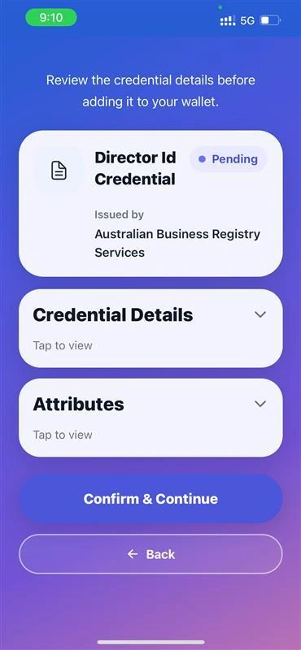
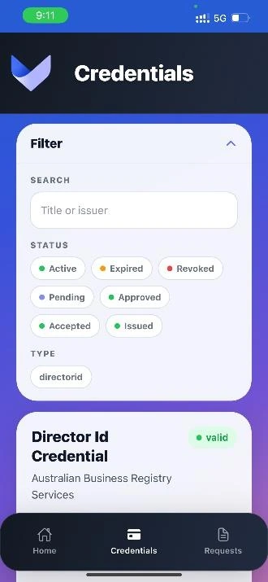
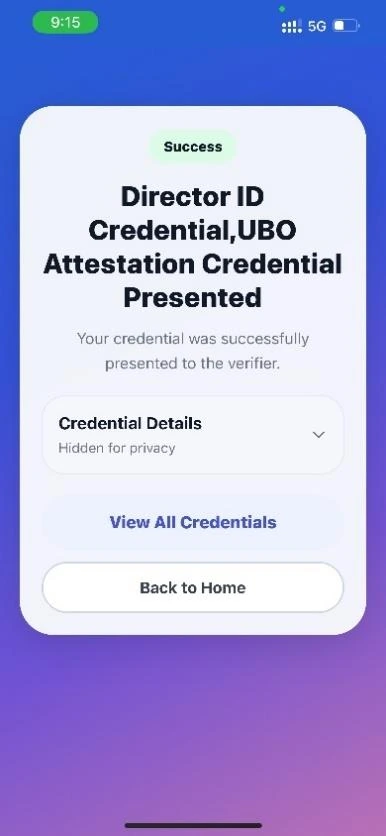
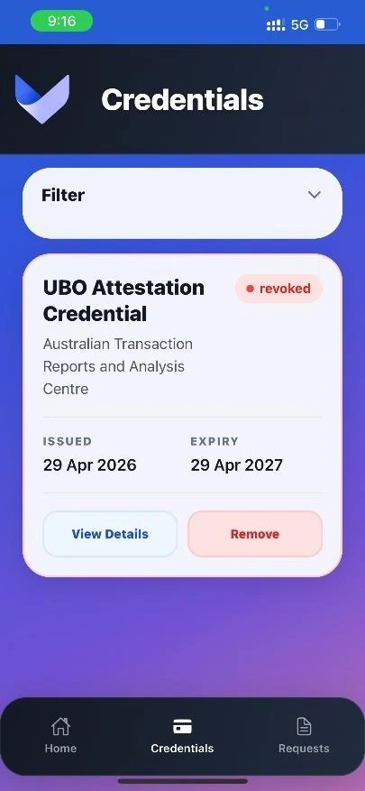
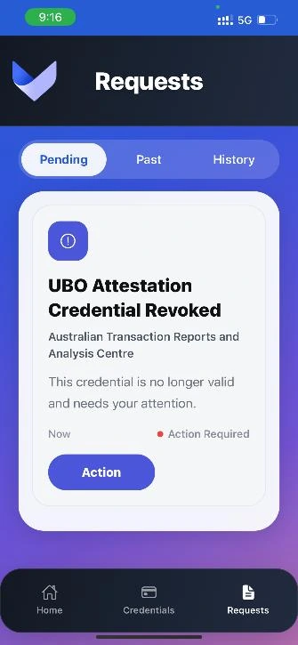
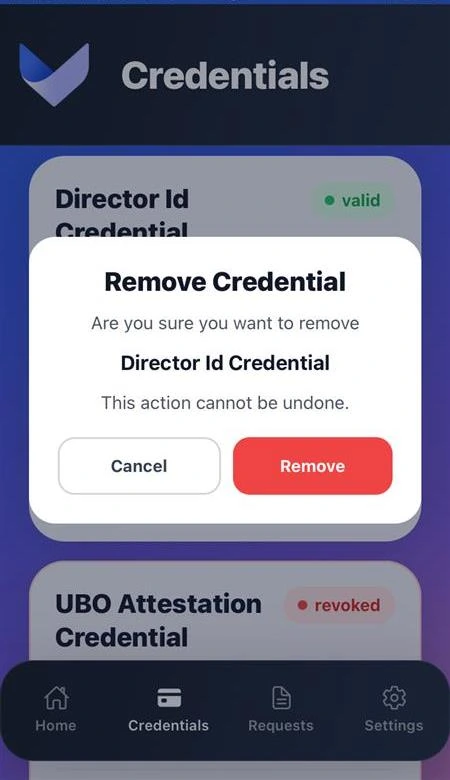

Verifiable credentials
Used W3C credential models and OpenID-style issuance and presentation flows for five business/compliance-oriented credential schemas.

A mobile wallet for receiving, managing and presenting verifiable credentials, designed around a deceptively difficult question: how can people prove something about themselves or their business without sharing everything?
Industry client: Verified Orchestration Team: 6 developers My role: Scrum Master
These are screens from our working capstone prototype, not visual concepts. The experience covers credential receipt, selective presentation and clear status feedback.
Screenshots are extracted from our final COMP3900 report and show illustrative test credentials, not real identity records.
For compliance workflows such as anti-money laundering and counter-terrorism financing, organisations may need to establish who a person is, whether a company is registered or whether someone is authorised to act on its behalf.
Our six-person team worked with industry client Verified Orchestration on a standards-oriented mobile prototype in which issuers provide signed credentials, holders manage them through a wallet and verifiers request evidence when it is needed.
The core challenge was joining a usable mobile experience to complex identity protocols, backend orchestration and evolving credential-status requirements.
A full credential lifecycle within one interface, connecting an issuer, the holder's wallet and a verifier through QR-based interactions.
An issuer prepares a credential offer and QR code.
The wallet receives the offer, previews the credential and stores it through its backend.
Matching credentials and eligible claims can be selected for a verifier's request.
Signature, status and validity policies contribute to a clear verification result.
Used W3C credential models and OpenID-style issuance and presentation flows for five business/compliance-oriented credential schemas.
Allowed holders to choose which eligible attributes were included in a presentation, without modifying the stored original credential.
Expired and revoked credentials were surfaced in the interface, with verification policies able to reject credentials no longer valid.
Supported PIN or biometric unlock, credential search and filtering, a details view, history notifications and confirmation before removal.
The app was one part of a larger system. The Python API handled request resolution and orchestration, while Walt.id provided dedicated identity services.
QR-based offers and presentation requests
Explore real application states from our team's final report. The gallery shows issuance, credential management, verification and lifecycle controls.






All images are taken from the university project's final report. Issuer and credential examples were created for demonstration and testing. This was not a production identity platform.
Our team demonstrated issuance, storage, presentation of individual or multiple credentials, selective disclosure, credential removal and issuer-driven revocation. The backend test configuration enforced an 80% minimum coverage threshold, and CI included linting, tests and Docker build checks.
The 80% figure is a configured minimum threshold, not a published measured coverage result. Interoperability was exercised with mock services; real third-party integrations and production security were not verified.
Across three sprints the project moved from an ambitious protocol-first design to an integrated, working client-server pipeline.
The prototype used remote Walt.id credential/key custody rather than the secure on-device design initially envisaged. It also required a local network and online services, with only iOS Expo Go use confirmed in the final evaluation.
A production direction would include device-bound cryptographic keys, stronger authentication, cloud-hosted APIs, offline capabilities and external interoperability testing.
The team presented the working system to Verified Orchestration at its Wynyard office in April 2026, demonstrating credential creation, storage, presentation, verification and deletion, followed by a technical discussion of integration and disclosure decisions.